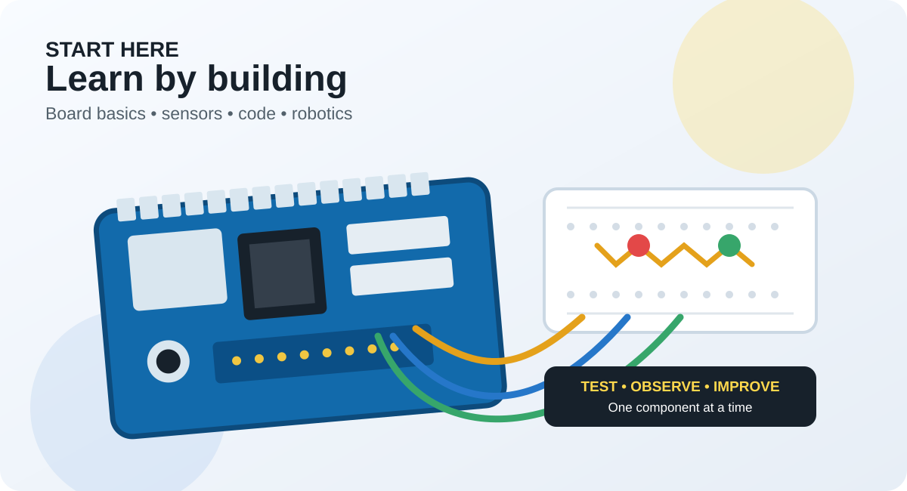
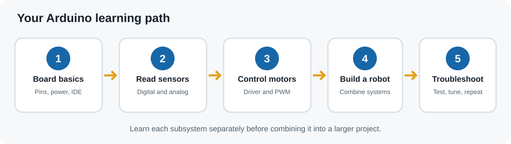

Know the Arduino Uno
Identify digital pins, analog inputs, power pins and USB connection before wiring a project.
Read the Arduino Uno R3 guide →Start with the Arduino Uno, then learn sensors, motor drivers and practical robotics step by step.

Understand power and pins before adding components. Test one part at a time to make debugging easier.

Identify digital pins, analog inputs, power pins and USB connection before wiring a project.
Read the Arduino Uno R3 guide →Check the module voltage, pin labels and whether its output is digital or analog. Keep the wiring simple while testing.
Learn the HC-SR04 sensor →Use a motor driver such as the L293D rather than powering a motor directly from an Arduino I/O pin.
Learn L293D motor control →Compare L293D and L298N drivers, follow a wiring checklist, and learn direction and PWM speed control before building a robot.
Read the Arduino motor driver guide →Test sensor readings and motor direction separately, then combine them into project logic.
Build a line follower robot →Before rewriting code, inspect the common causes below.
Try a USB data cable, select the correct board and port in the IDE, and install the required driver if the board needs one.
Confirm VCC and GND, use the pinout for your exact module, check signal pin assignments and test with a short example sketch.
Check the motor-driver supply, common ground, enable pin and wiring. Motors often need a separate power source sized for their current.
Use what you have learned in a practical build, then return to the relevant guide when you need to debug a subsystem.
Combine an ultrasonic sensor with a motorized mechanism. Test distance readings before adding movement.
Build the smart dustbin →Learn how sensors and motor control work together to keep a robot on a track.
Follow the robot tutorial →Read digital and analog outputs, choose a threshold from real readings and troubleshoot line tracking.
Read the calibration guide →Find boards, sensors, motor drivers and robotics parts at Vayuyaan.